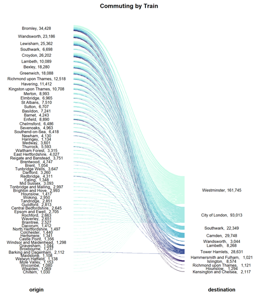

Three Graphs to Analyze Commuting Patterns in the UK
When the Covid-19 pandemic struck in early 2020, our daily routines changed dramatically. Many workers began working from home, while others chose to commute by private means to avoid potential contamination on public transport. This shift raised a critical question: what would happen when lockdowns ended and everyone returned to their workplaces? More intriguingly, what would occur if a significant number of workers who previously used public transport switched to private cars?
Goal
The primary goal of this project was to anticipate and understand which roads would be most affected if commuters transitioned from public transport to private cars. By visualizing and analyzing commuting patterns, I aimed to identify potential traffic congestion hotspots and better prepare for future changes.
Process
To tackle this question, I embarked on an exploratory geo-spatial data analysis to identify areas with the highest commuting flows, taking into account various distances and commuting methods. The most comprehensive data available for this analysis came from the 2011 Census. I combined this data with local authority district Shapefiles, creating a robust foundation for generating maps and Sankey diagrams using the ggplot and ggforce packages in R.
- Data Collection: Utilized the 2011 Census data for detailed commuting information.
- Spatial Integration: Mapped the data using local authority district Shapefiles.
- Visualization: Created insightful maps and Sankey diagrams with R packages.
Result
The resulting map of England's commuters highlighted clear patterns in commuting behavior, segmented by shorter and longer distances. Interestingly, it showed a relatively low number of public transport users compared to private vehicle commuters. This insight suggests that a mass switch from public transport to private cars might not severely disrupt the roads.
Focusing on specific areas like London, I created a more detailed view. By examining local authority districts within a 60km radius of central London, the map pinpointed districts with the highest numbers of public transport commuters. These areas are crucial as they might face increased road traffic if many commuters switch to private cars.
To delve deeper, I used Sankey diagrams to display actual commuter numbers for travel into central London
districts. For clarity, I included only districts with over 1,000 trips. While a table could present
this data, Sankey plots offer a dynamic visualization that quickly identifies high commuter flows,
making them a valuable tool alongside structured tabular data.

By presenting the data in a visually engaging way, this analysis not only clarifies current commuting patterns but also provides valuable insights for urban planning and traffic management in a post-pandemic world.